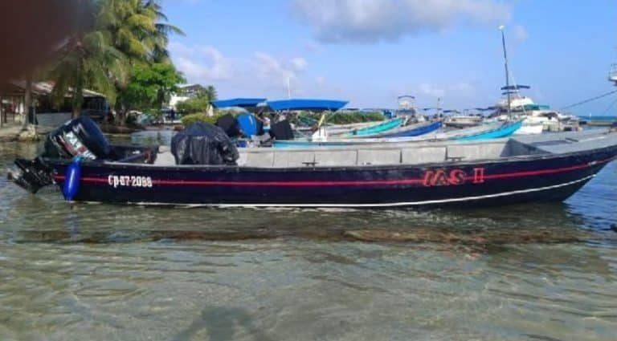
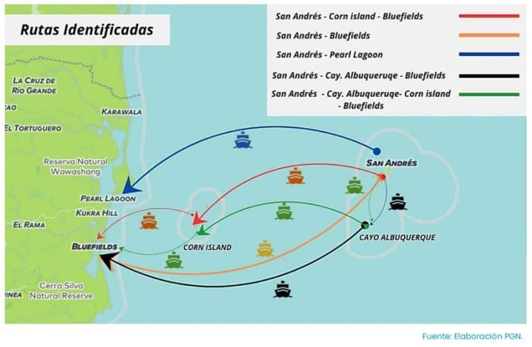
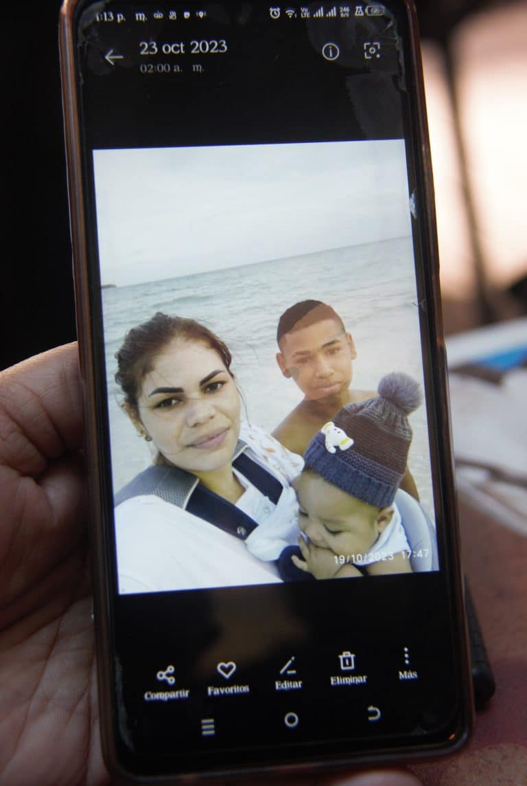
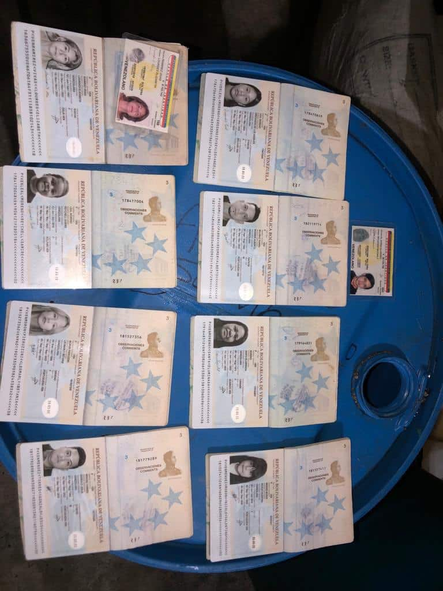

 El 21 de octubre de 2023, Livia recibe una llamada de su hija Leomarly, aproximadamente a las 8:00 PM,
para avisarle que ya estaba a punto de abordar la lancha IAS II desde El Cove, en la Isla de San Andrés
con destino a Nicaragua.
Al igual que Leomarly, miles de venezolanos han emprendido rutas migratorias ilegales para intentar llegar a
destinos finales como Estados Unidos. Siendo una de estas rutas la de la Isla de San Andrés en Colombia,
intentando evitar de esta manera el paso por el Darién.
A bordo de la lancha IAS II iban 36 personas venezolanas, 2 hombres chinos, y 4 colombianos (incluyendo a
los dos tripulantes de la lancha), para un total de 42 personas desaparecidas hasta la fecha.
Que incluye a 17 menores de edad y dos mujeres embarazadas, una de tres meses y otra de 8 meses.
Leomarly Betania Morón Pieruzzini (27 años), es una de las mujeres que al momento de la desaparición
tenía tres meses de embarazo, y viajaba junto a su hija, Nicole Valentina Méndez Morón (7 años);
su pareja y padre de Nicole, Gonzalo Jesús Méndez Torres (30 años) y su primo Rosmer Alberto Mujimac Parra (41 años).
Es en fecha 22 de octubre de 2023 cuando familiares logran contactar al “guía” del viaje
(conocido como Manuel “El Capi”), y es cuando éste les informa a través de un audio de WhatsApp
que habían sido dejados en Cayo Alburquerque a la espera de que llegara la lancha que les haría
el transbordo hasta Corn Island en Nicaragua y que les había enviado comida. Intentando un nuevo
contacto el día lunes 23 de octubre, y es cuando este “guía” les dice que la información que circulaba
sobre unos migrantes desaparecidos se trataba de sus familiares y luego no volvió a dar más respuestas.
Según un Informe de la Procuraduría General de la Nación de Colombia (PGN), de octubre de 2023,
los migrantes llegan a esta zona a través de “planes turísticos” conocidos como “paquetes VIP”,
que se ofrecen a través de redes sociales o páginas de internet y cuyos costos van desde los $1500 a
los $5000. Una ruta migratoria, según la PGN, que ha aumentado desde 2019, en su mayoría por venezolanos.
Sobre este caso, los entrevistados señalaron que algunos de sus familiares habían adquirido
paquetes de viaje que incluían transporte y boletos aéreos; otros se trasladaron por su cuenta
a San Andrés y pagaron solo paquetes de hospedaje, comida y el traslado en lancha. Y que el costo
mínimo de viaje estaba en $1000 hasta Nicaragua y entre $4500 y $5000 hasta México.
Entre los riesgos detectados en esta ruta por el Informe de la PGN se encuentran los traslados en
lanchas pequeñas e inseguras de un solo motor; carencia de chalecos salvavidas y la falta de
instrumentos de comunicación. Durante estos trayectos los migrantes se enfrentan, además, a posibles
naufragios, a redes de narcotráfico y posible reclusión o trata de personas.
La PGN informó de la existencia de 5 rutas migratorias: “Ruta 1: San Andrés – Corn Island (Nicaragua)
– Bluefields (Nicaragua) / Ruta 2: San Andrés – Bluefields / Ruta 3: San Andrés – Pearl Lagoon
(Nicaragua) / Ruta 4: San Andrés (Cayo Pescador) – Cayo Albuquerque – Bluefields / Ruta 5 :
San Andrés – Cayo Albuquerque – Corn Island – Bluefields”.
 La PGN señala, además, que la Armada Nacional de Colombia ha rescatado en Altamar a
más de 800 migrantes en aguas de San Andrés, Providencia y Santa Catalina, entre junio de 2022 y
julio de 2023, que provienen de países como Venezuela, Haití, Uzbekistán, Ecuador, China, Vietnam,
Bangladesh, Bielorrusia y Bosnia.
Entre las diversas gestiones realizadas por los familiares para conseguir información de las personas
desaparecidas, sostuvieron una reunión con la Procuradora General Margarita Cabello en Bogotá, en
donde se confirmó la cifra de 59 migrantes venezolanos desaparecidos en 2022 más los 36 desaparecidos
del 21 de octubre de 2023, lo que da un total para la fecha de 95 venezolanos desaparecidos en estas
rutas marítimas, de acuerdo a los registros.
– “Eso no fue un naufragio porque no ha salido nada”.
Por su parte, los familiares niegan que lo ocurrido haya sido un naufragio.
Mucho menos cuando realizaron rastreos en el GPS que arrojó que uno de los celulares retornó
a San Andrés 20 minutos después de haber zarpado la lancha IAS II. Otro teléfono indicó que se
encontraba cerca del aeropuerto Gustavo Rojas Pinilla de San Andrés. Otros rastreos indican actividades
recientes en redes sociales como Facebook, cambio en las contraseñas y respuestas con stickers cuando
los familiares escriben por Messenger.
Como el caso del teléfono de Gonzalo Jesús Méndez Torres (30 años), cuyos familiares lograron
revisar las últimas sesiones abiertas de Facebook que indicaban que luego de la conexión en
San Andrés a las 7:39 pm del 21 de octubre de 2023, hubo otra conexión en Bogotá a las 00:00 el 22 de octubre.
Los familiares denuncian que reciben llamadas de números desde Nicaragua solicitándoles
dinero para darles información o, como el caso de Wilson, la pareja de Dylimar Dilyanni
Guevara Moreno (31 años), quien viajaba con sus hijos Edwin Guevara (3 Meses de edad) y Endry Rafael
Vásquez Guevara (13 años), a quien tres semanas después de la desaparición recibió contacto a
través de whatsapp, donde le decían que tenían a Dylimar en el Darién, y que ella y el bebé
estaban enfermos por lo que le pidieron $145 para trasladarlos al hospital más cercano.
Pero luego de pagar no recibió más información.
 – “Escucharlo y vivirlo son dos cosas muy diferentes. Los días pasan, las horas pasan. Es una zozobra”.
Por redes sociales circuló también una fotografía de 8 pasaportes y dos cédulas venezolanas, p
ertenecientes a 9 de los familiares desaparecidos, los cuales se aprecian secos y en buen estado,
encontrados al parecer por unos pescadores en la Isla El Limón, en Costa Rica, 11 días después de la
desaparición, pero los familiares dicen que luego fueron retiradas las fotografías y no saben lo que
ocurrió con dichos documentos.

Para el 30 de noviembre de 2023 la Plataforma de Coordinación Interagencial para Refugiados
y Migrantes de Venezuela (R4V), de acuerdo a datos suministrados por países receptores, registra un
total de 7.722.579 venezolanos refugiados y migrantes en el Mundo. Mientras que en América Latina
y el Caribe registran 6.538.756. En Colombia el registro es de 2.875.743 personas. Pero ninguna
de estas cifras incluye a migrantes en situación irregular.
En las entrevistas realizadas con las familias de los desaparecidos, todos coinciden en que
sus familiares decidieron viajar en búsqueda de mejores condiciones, debido a que no contaban
con salarios suficientes que les permitieran tener una calidad de vida digna en Venezuela.
Desde esa última llamada de Leomarly, Livia Pieruzzini no supo más nada de ella ni del resto de su familia.
Quedando a la espera de que le avisara cuando llegara a Nicaragua como le había dicho.
– “No he sabido más nada de ellos. San Andrés no hace nada.”